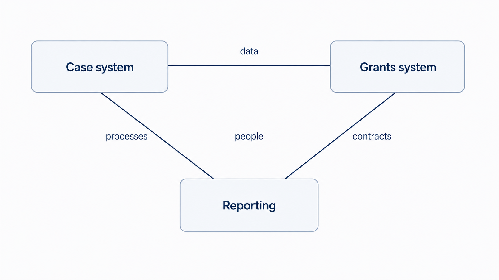
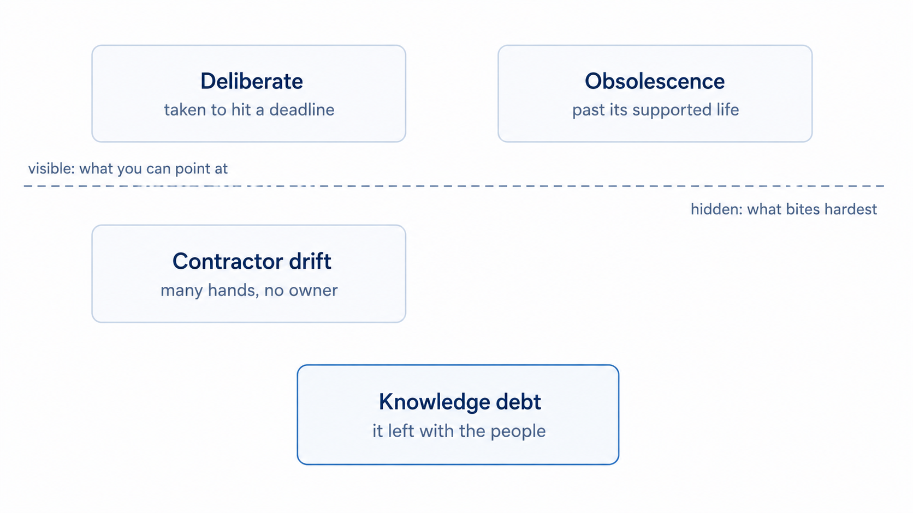
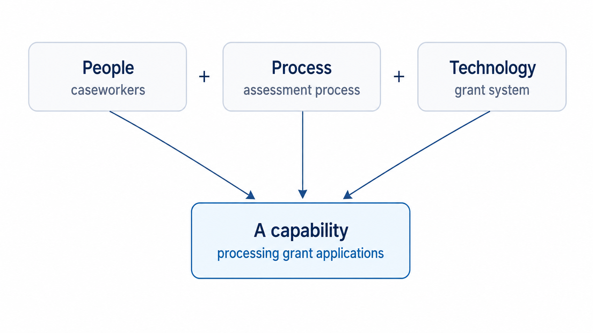
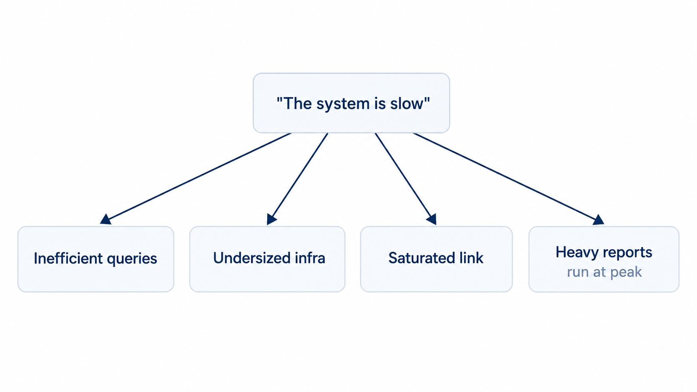
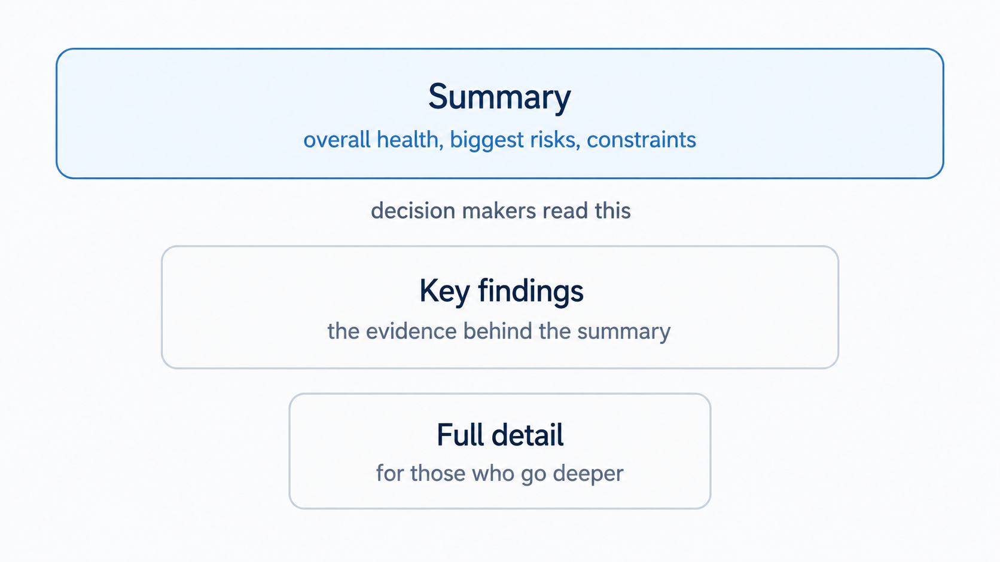

Assessing the current state
Every architecture project starts from somewhere, and that somewhere is rarely as tidy as the documentation claims. Before you design anything new, you have to understand what you're really working with. This guide is about doing that honestly: mapping the systems, data and processes that already exist, weighing the debt and the risk without flinching, and telling the pain people feel apart from the causes underneath it.
You'll come away with:
- How to map the systems, data and processes that already exist.
- How to weigh technical debt and integration risk honestly.
- How to tell pain points apart from the root causes beneath them.
- How to produce current state documentation that actually changes decisions.
Why current state assessment matters
The hardest part of current state work is resisting the urge to skip it. Designing the future state is the interesting part, there's always pressure to get there, and so the current state gets a glance rather than a proper look. Government punishes that shortcut more than most places, because the systems here have piled up over decades, the people who understood them have long since moved on, and the documentation that outlived them was optimistic when it was written and is simply wrong now.

A list of systems is the easy part. The harder and far more valuable picture is the relationships between them: the data that moves around, the processes that quietly depend on them, the contracts that govern them, and the people who keep them running. Miss one of those and the gap reappears later as a delivery surprise, almost always an expensive one.
Treat current state assessment as risk mitigation. Every hour understanding what exists saves several once delivery is under way.
Mapping existing systems
Start with whatever documentation exists, then assume it's lying to you. Not maliciously, just through neglect: a system gets changed without anyone touching the diagram, an integration gets bolted on in a hurry, a component is switched off on paper but keeps running in production. The reality lives with the people who use and operate the systems every day, which is why a conversation beats a register every time. Ask what they actually use, where their data comes from, and what breaks most often. Watch the manual steps especially closely, because the spreadsheet someone pulls from one system every Monday and loads into another is an integration whether or not anyone calls it one. You'll nearly always turn up a system nobody admitted owning: a database sitting on a desktop, a scheduled job no one remembers setting up. Those shadow systems are worth your attention, because each one is a need the official systems failed to meet. Keep the map simple enough that the whole team can read it without a key, because the goal is shared understanding, not a drawing so elaborate it becomes a thing to admire rather than use.
Understanding technical debt
Technical debt is the bill that eventually arrives for decisions that made sense under pressure at the time. Some of it was deliberate, taken knowingly to hit a deadline with a promise to fix it once things calmed down, and things rarely calm down. Some accumulated quietly as rotating teams of contractors each left their own fingerprints on the codebase. Some is nobody's fault at all, just the slow drift of technology that was current when it was chosen and is now well past its supported life.

The kind that bites hardest in government is knowledge debt, the understanding that walked out of the building when a key person's contract ended and was never written down. A system nobody fully grasps is slow and frightening to change. Resist the pull to catalogue every last bit of debt, which is a task with no end, and concentrate on the debt that touches your work: what makes integration harder, what makes migration riskier, what leaves a security hole you'll have to answer for. Then put it in language people who don't think in code can act on. Deferred maintenance on a building is the comparison that tends to land: it still stands, but every repair costs more than it should, because you're working around years of problems that were patched over rather than fixed.
Assessing integration points
Integrations are where systems meet, and where projects tend to come unstuck. For each connection you want a few honest answers:
- What kind of interface it is.
- What data crosses it, how often, and in what volume.
- What happens when it fails, which is frequently nothing useful, and that is itself a finding worth recording.
- Who actually owns it.
Ownership is where government turns murky. The integration was built years ago by a supplier who has since gone, and now neither team on either side thinks of the thing as theirs. Contracts box you in just as much, with notice periods and change fees that turn a small technical tweak into a procurement exercise. The riskiest items on any assessment are the undocumented ones, the connections held together by knowledge living in a single person's head. A plain matrix of every system to system link against these few criteria gives you one view of the whole estate and shows you where the danger actually sits, rather than where you assumed it would.
Documenting the current state honestly
Current state documentation has one job: to help people make good decisions about the future. That only works if it tells the truth, including the parts that are uncomfortable to say out loud. The failures here are quiet ones. Systems get described as healthier than they are, because the team that built them is still in the room. Problems get noted without naming the cause, because the cause points at a decision someone is still defending. The diagram gets repeated as gospel while operations tell a completely different story. Honest documentation says what actually exists, backs it with evidence, and admits the places you couldn't verify anything. The skill with sensitive findings is to stay on facts and off judgement. Saying a system was built in 2015 on technology that has since reached end of life is a fact nobody can argue with. Saying it was badly built is a verdict that earns you an enemy and changes nothing. Write for the architect who inherits this in two years, because someone will, and they'll need to know what exists, and also why, what works, and what to keep an eye on.
If the documentation hides the real problems, the future state design quietly inherits every one of them.
Capability mapping
Systems are only part of the story. A capability is what the organisation can actually do, and it's always a blend of people, process and the technology that supports them.

Processing grant applications is caseworkers plus an assessment process plus a grant system, and if you only see the system you've missed two thirds of what makes it work. This matters most when you replace something. Swap out the technology without accounting for the skills it demands or the way work really flows, and a technically superior system will still fail in the hands of people it was never shaped around. A simple maturity scale gives you a way to discuss this with people who don't live in architecture. Most government capabilities sit near the bottom of that scale, informal and dependent on particular individuals, and knowing that sets honest expectations: nudging a capability up one level is a real achievement, while promising to vault it from the bottom to the top inside a single project is how programmes end up disappointing everyone. Mapping also exposes where two teams are doing almost the same thing in different tools, which looks like easy consolidation right up until you look closely and find the differences that actually matter.
Pain points versus symptoms
When you ask people about the current state, they tell you what hurts. The system is slow. They can't get the data they need. It doesn't do what they want. Those complaints are real and worth hearing, but they're symptoms, and a single symptom can sit on top of several very different causes.

Slow might mean inefficient queries, undersized infrastructure, a saturated link to the data centre, or simply users running heavy reports in the busiest hour of the day. Keep asking why until you reach something that, if you fixed it, would make the complaint disappear. Watch for one cause wearing different costumes across teams: when operations say the system is slow, users say the reports take forever, and the developers grumble about the database, they're usually describing one underlying problem from three angles. Design your future state around the symptoms and you'll build something that feels better for a while, then grows the very same problems once the data volume catches up. Trace it back to the cause and the new design improves in substance rather than simply looking newer.
Documentation that changes decisions
All of this is wasted if the documentation ends up in a folder nobody opens. Structure it so the findings that matter reach the people making decisions first.

A short summary up front covers the overall health, the biggest risks, and the constraints the future state has to live within, with the detail behind it for those who need to go deeper. Keep it visual, because a map of the estate or a matrix of integrations communicates faster than paragraphs ever will. Keep it honest, including the findings you'd rather not write down. Keep it current, because systems change and people move, so date it and plan to revisit it if the work runs past a few months. And keep it somewhere the team can find and open without specialist software. There's a simple test for whether any of it was worth the effort. Would the future state design come out any different if you'd skipped the assessment entirely? If the honest answer is no, the work was either unnecessary, which is unlikely, or it didn't go deep enough, which is far more common.
Good current state documentation passes one test: it changes what happens next. If the design would look the same without it, dig deeper.